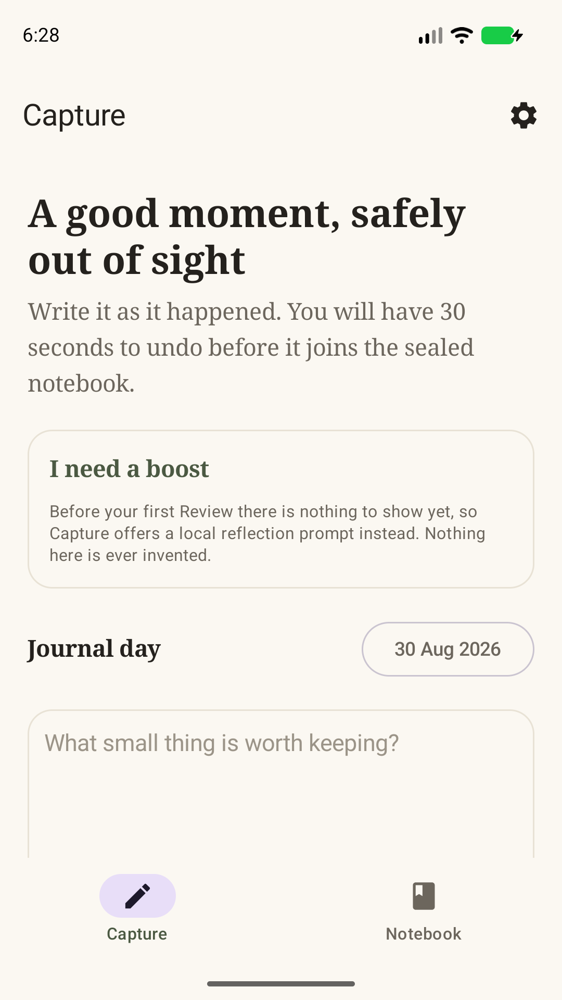

For people who already keep little notes
Keep the small good.
A kind word. A small win. Give it somewhere to stay.
Posi-Side is a private positive-moment notebook. Capture a moment, take 30 seconds to keep or undo it, then revisit it after a wait you choose.
Request an Android test inviteFree internal test · Android 12+ · Secure screen lock required
This is an early test, with invitations reviewed individually. It is not a public Google Play release.

Notice it.
A few words about something good that happened.
Let it rest.
After 30 seconds, the moment seals for your chosen wait.
Return to it.
A seven-day Review Window gives you time with the collection.
Help shape the Android experience
Try a quieter way to keep a moment.
We’re looking for adults who already use a journal or notes app, especially in the UK. Try capturing and undoing a made-up moment, choosing a wait, and finding your opening date. Tell us which steps feel clear and which do not.
Notes are encrypted on your phone. The app has no Posi-Side account, ads or AI Coach in this release. An invitation uses your Google Play email; it does not give us access to your notebook.
Use sample text during testing. Do not send journal entries, passwords or recovery words. An invite is not guaranteed and there is no promised public release date.
Looking for iPhone?
The UK App Store has version 1.0 for £3.99, requiring iOS 18+. It has a known issue that can prevent a sealed notebook opening after a restart or clock change. The fix is not yet publicly available.
Read the current release note · View the iPhone listing
Store availability checked 13 September 2026. Posi-Side is for personal reflection; it does not treat medical conditions.